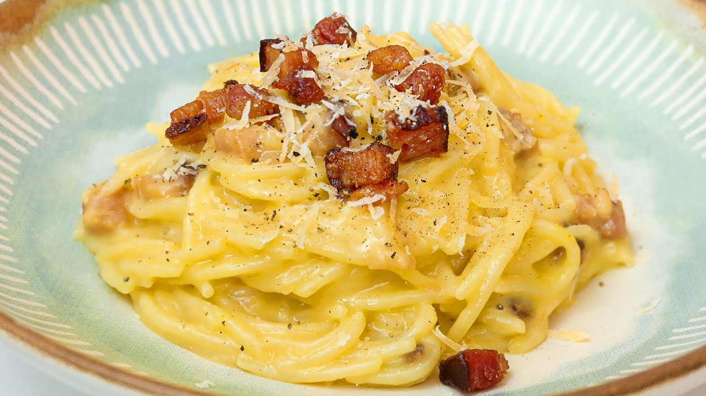

Receitas em Destaque
Torta de Maçã
Ingredientes: Para a massa: 2 e 1/2 xícaras de farinha de trigo 1 colher de chá de sal 1 colher de chá de açúcar 225g de manteiga sem sal, gelada e cortada em cubos 1/4 a 1/2 xícara de água gelada Para o recheio: 5 a 6 maçãs (preferencialmente do tipo Granny Smith), descascadas, sem sementes e fatiadas 1/2 xícara de açúcar 1/4 xícara de farinha de trigo 1 colher de chá de canela em pó Suco de meio limão Para a cobertura: 1 ovo batido (para pincelar) Açúcar cristal (para polvilhar) Instruções: Pré-aqueça o forno a 200°C. Em uma tigela grande, misture a farinha, o sal e o açúcar. Adicione a manteiga gelada e misture com as pontas dos dedos até obter uma mistura semelhante a uma farofa. Adicione a água gelada aos poucos, misturando até a massa começar a se unir. Forme uma bola com a massa, cubra com filme plástico e leve à geladeira por pelo menos 30 minutos. Em uma tigela separada, misture as fatias de maçã, o açúcar, a farinha de trigo, a canela e o suco de limão. Reserve. Divida a massa em duas partes, sendo uma maior para a base e uma menor para a tampa da torta. Abra a massa maior em uma superfície enfarinhada e transfira para uma forma de torta de aproximadamente 23 cm de diâmetro, pressionando-a delicadamente no fundo e nas laterais. Despeje o recheio de maçã sobre a massa. Abra a massa menor e cubra a torta, fazendo pequenos cortes para permitir a saída do vapor. Pincele a cobertura com o ovo batido e polvilhe com açúcar cristal. Leve ao forno pré-aquecido por cerca de 45 a 50 minutos, ou até a massa ficar dourada e o recheio borbulhante. Retire do forno e deixe esfriar um pouco antes de servir. A torta de maçã pode ser servida quente ou em temperatura ambiente. Acompanhe com uma bola de sorvete de baunilha, se desejar. Aproveite sua deliciosa torta de maçã caseira!
Receita com mais detalhes
Frango ao Curry
Ingredientes: 500g de peito de frango, cortado em cubos 1 cebola média, picada 3 dentes de alho, picados 1 colher de sopa de curry em pó 1 colher de chá de cúrcuma em pó 1 colher de chá de cominho em pó 1/2 colher de chá de gengibre em pó 1/2 colher de chá de canela em pó 1 lata (400ml) de leite de coco 2 colheres de sopa de óleo vegetal Sal a gosto Coentro fresco picado (opcional, para decorar) Instruções: Em uma panela grande, aqueça o óleo vegetal em fogo médio-alto. Adicione a cebola picada e refogue por alguns minutos até ficar macia e translúcida. Acrescente o alho picado e continue refogando por mais um minuto. Adicione o frango em cubos à panela e cozinhe até que esteja dourado por todos os lados. Em seguida, adicione o curry em pó, a cúrcuma, o cominho, o gengibre em pó e a canela. Misture bem para que o frango fique bem revestido com os temperos. Despeje o leite de coco na panela e mexa para combinar todos os ingredientes. Reduza o fogo para médio-baixo, tampe a panela e deixe cozinhar por cerca de 15 a 20 minutos, ou até que o frango esteja cozido e os sabores estejam bem incorporados. Prove o molho e ajuste o sal de acordo com seu gosto pessoal. Retire a panela do fogo e deixe descansar por alguns minutos antes de servir. Sirva o frango ao curry acompanhado de arroz branco ou basmati e polvilhe com coentro fresco picado por cima, se desejar. Desfrute de um delicioso frango ao curry, cheio de sabores exóticos e aromas incríveis!
Receita com mais detalhes
Massa Carbonara
Ingredientes: 200g de espaguete ou outra massa longa de sua preferência 150g de pancetta ou bacon em cubos 3 gemas de ovo 50g de queijo pecorino romano ralado (ou parmesão) Sal a gosto Pimenta-do-reino moída na hora 2 colheres de sopa de azeite de oliva 2 dentes de alho picados (opcional) Salsinha picada para decorar (opcional) Instruções: Em uma panela grande, coloque água para ferver e adicione sal. Cozinhe a massa de acordo com as instruções da embalagem até ficar al dente. Enquanto a massa cozinha, em uma frigideira grande, aqueça o azeite de oliva em fogo médio-alto. Adicione a pancetta ou bacon em cubos e cozinhe até ficar crocante e dourado. Se desejar, adicione o alho picado e refogue por cerca de 1 minuto, até ficar levemente dourado. Em uma tigela separada, misture as gemas de ovo e o queijo pecorino romano ralado. Tempere com uma pitada de sal e pimenta-do-reino moída na hora. Escorra a massa cozida, reservando um pouco da água do cozimento. Transfira a massa para a frigideira com a pancetta ou bacon, fora do fogo. Mexa bem para que a gordura envolva a massa. Adicione a mistura de gemas e queijo sobre a massa quente, mexendo rapidamente para que os ovos não cozinhem demais e formem grumos. A mistura vai criar um molho cremoso. Se necessário, adicione um pouco da água do cozimento da massa para afinar o molho e obter uma consistência mais suave. Tempere com sal e pimenta-do-reino a gosto. Sirva imediatamente em pratos aquecidos, polvilhando com mais queijo ralado e salsinha picada, se desejar. Aproveite a autêntica massa carbonara, com sua riqueza de sabores e texturas!
Receita com mais detalhes Strogonoff
Ingredientes: 500g de carne bovina (filé mignon, alcatra ou contrafilé), cortada em tiras 1 cebola média, picada 2 dentes de alho, picados 200g de cogumelos fatiados (opcional) 2 colheres de sopa de manteiga 1 colher de sopa de óleo vegetal 1 colher de sopa de ketchup 1 colher de sopa de mostarda 1 colher de sopa de molho inglês 1 xícara de creme de leite Sal a gosto Pimenta-do-reino a gosto Salsinha picada para decorar Instruções: Em uma frigideira grande, aqueça o óleo vegetal e a manteiga em fogo médio-alto. Adicione a cebola picada e o alho e refogue até ficarem dourados e perfumados. Acrescente a carne em tiras à frigideira e cozinhe até que esteja dourada por todos os lados. Tempere com sal e pimenta-do-reino a gosto. Se estiver usando cogumelos, adicione-os à frigideira e cozinhe por mais alguns minutos até que estejam macios. Reduza o fogo para médio-baixo e adicione o ketchup, a mostarda e o molho inglês. Mexa bem para incorporar os ingredientes. Despeje o creme de leite na frigideira e continue cozinhando em fogo baixo por cerca de 5 minutos, mexendo ocasionalmente, até o molho ficar bem aquecido. Prove o strogonoff e ajuste o sal e a pimenta conforme necessário. Retire do fogo e sirva o strogonoff de carne quente, acompanhado de arroz branco ou batatas cozidas. Polvilhe com salsinha picada para decorar. Desfrute do seu delicioso strogonoff de carne, um prato clássico e reconfortante! Você também pode variar a receita substituindo a carne bovina por frango, camarão ou cogumelos, de acordo com suas preferências.
Receita com mais detalhes